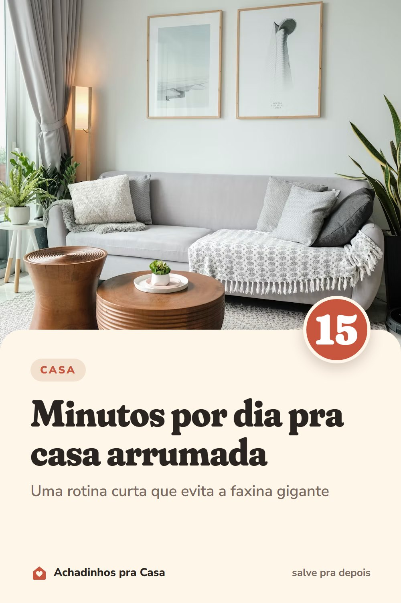

Casa
Rotina de 15 minutos por dia pra casa arrumada
Uma rotina curta que evita a faxina gigante.
- Louça em diaLavada, no escorredor ou na máquina. Pia vazia de noite muda a manhã seguinte.
- Bancada livreGuarde o que ficou fora e passe um pano. É o lugar da casa que mais junta bagunça.
- Cada coisa no seu lugarDê uma volta pela casa e devolva ao lugar o que está fora dele: controle, sapato, casaco.
- Roupa suja no cestoNada de roupa na cadeira. O cesto evita a montanha do fim de semana.
- Lixo para foraLixeira cheia sai no mesmo dia, antes de dar cheiro.
- Use um cronômetroQuinze minutos e acabou. Com hora para terminar, fica mais fácil começar.